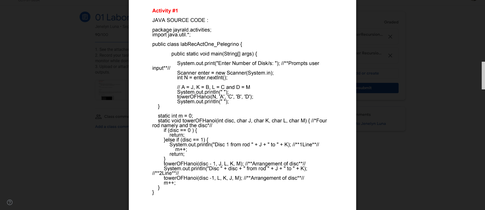
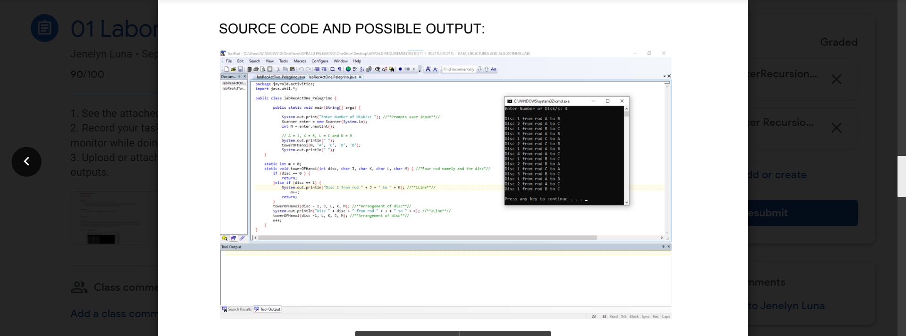

1 / 5

2 / 5

3 / 5

4 / 5

5 / 5

So this is where I learned in activity 1 which is my mother's lesson that recursion is said to be These rings are of different sizes and stacked upon in an ascending order, i.e. the smaller one sits over the larger one. where there is a sequence of moving each ring to its rods and we did it in java code. and in activity 2, I coded here about the anagram which is meaning Two strings are said to be anagram if we can form one string by arranging the characters of another string. For example, Race and Care. Here, we can form Race by arranging the characters of Care. I set 2 substrings here which is 4 letters randomly rearranging the letters in the place that should not be repeated when placed that's what I learned.
“The beautiful thing about learning is that no one can take it away from you.” – B.B. King